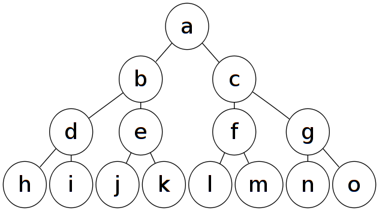

Lecture 9 - Traversing
Traversing
Ще говорим за методи за преминаване между елементи на дървото на документа чрез jQuery.
Има 3 посоки, в които може да преминавате:
- Нагоре - към родителите на елемента
- Надолу - към децата на елемента
- Натрани - към sibling-ите на елемента
Също така ще говорим и за управление jQuery колекциите.
Преминаване нагоре
Преминаване надолу
.children()- връща(и филтрира) всички директни деца.contents()- връща(и филтрира) всички директни деца, включително текстови node-ове и comment node-ове.find()- връща(и филтрира) всички node-ове надолу по дървото, в дълбочина
Преминаване настрани
.siblings()- връща(и филтрира) всички node-ове на същия родител и на същото ниво.next(),.prev()- връща предишен(респективно следващ) елемент от същия родител.nextAll(),.prevAll()- връща всички предишни(респективно следващи) елементи от същия родител.nextUntil(),.prevUntil()
Visual aid

Манипулиране на колекции
.add()- добавя нови елементи в колекцията.eq()- извлича елемент от определен индекс в колекцията.filter()- филтрира елементите в колекцията със селектор или функция.first()- оставя само първия елемент от колекцията.has()- филтрира колекцията така че да останат само елементи, които имат деца с определен селектор.last()- оставя само последния елемент от колекцията.not()- оставя само елементите, които не отговарят на определен селектор.slice()- оставя само елементите между определени индекси
Работа със стека на jQuery обекта
Когато промените дадена колекция с някой от горните методи, jQuery записва старото състояние на колекцията, така че можете да се върнете към него на по-късен етап.
Това се прави чрез метода .end().
$('.nav')
.addClass('main-navigation')
.find('li')
.addClass('nav-items')
.on('click', function () {
console.log("clicked");
})
.end()
.find('ul')
.addClass("nav-lists");
Други операции върху jQuery колекции
.map().is()
За четене и задачи
Камък ножница хартия
Морски шах